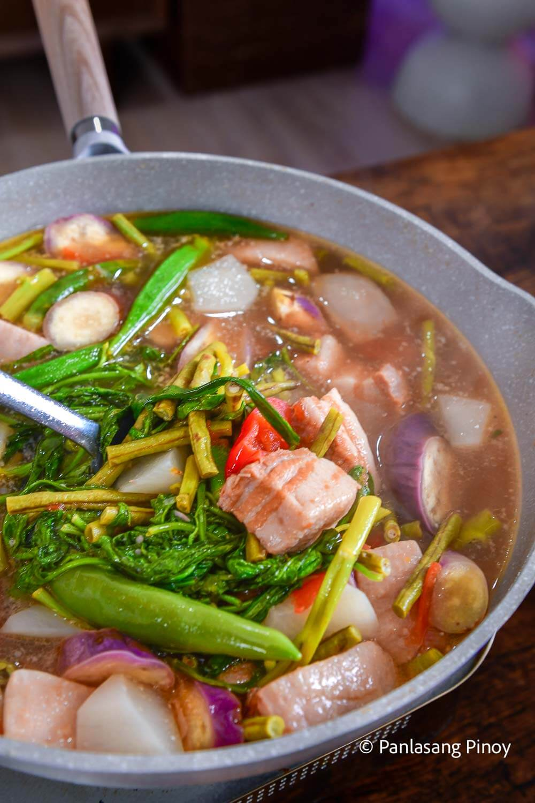

Home
Sinigang

Sinigang is a Filipino sour soup with pork belly, tamarind broth, and vegetables like daikon radish, eggplant, string beans, and kangkon. The nroth is sour from the tamarind and savory from the pork fat that comes out as meat simmers. This Pork Sinigang is the most common version of sinigang in Filipino homes. It is eaten with rice and a sacuer of fish sauce with crushed siling labuyo on the side. This Pork Sinigang recipe uses the traditional boiled method.
Ingredients
- 2 lbs. Pork belly - The fat gives the broth its body. You can also use pork shoulder, spare ribs, or pork neck bones.
- 1 lb. Young tamarind - is the traditional souring agent. THese are the unripe green pods.
- 1 bunch Water spinach(kangkong) - Wash thoroughly and separate the leaves from the tougher lower stems.
- 8 pieces String beans (sitaw) - Cut into 20inch lenghts. Green beans work as a substitutes.
- 2 pieces Eggplant - Chinese or Ja[anese variety is best. Slice diagonally or roll-cut.
- 1 piece Daikon radis (Labanos) - One medium piece is enough. This is an optional ingredient.
- 8 pieces Okra - Use whole or sliced.
- 2 pieces Tomatoes - Slice into wedges.
- 2 pieces Long green pepper (siling pansigang) - Use 2 pieces. Jalapeno or Serrano work as substitutes.
- 1 pieces Onion - Sliced into wedges and added with pork.
- 2 quarts water
- Fish sauce (patis) - To taste in the pot, plus more for dipping on the side.
Steps
- Boil the young tamarind in 2 quarts of water for 40 minutes. Filter the tamarind broth using a kithcen sieve or strainer. Squeeze the tamarind afterwards to extract its reamining juices.
- Pour the tamrind broth into a cooking pot. Let it boil and then add the onion, pork belly, and half the amount of the tomatoes.
- Skim-off the floating scums, pour 1 tablespoon fish sauce, cover and continue to simmer for 1 hour.
- Add daikon radish and eggplants.
- Add the long green pepper, string beans, remaining tomatoes, and okra. Cook for 3 minutes.
- Add the chopped water spinach stalks and season with fish sauce and ground black pepper. Cook for 2 minutes.
- Put the water rspinach leaves. Cover and turn theheat off. Let the residual heat cook the leaves for 3 minutes before serving.
Making Pork Sinigang is straightforward when you handle the tamarind and pork separately at the start. Take it one step at a time and the pot will come together cleanly. More Recipes